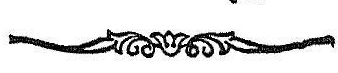

श्रीमन्महामाहेश्वराचार्याभिनवगुप्तविरचिते
श्री जयरथकृतविवेकाव्यटीकोपेते
अथ
श्रीतन्त्रालोके

श्रीमन्महामाहेश्वराचार्याभिनवगुप्तविरचिते
श्री जयरथकृतविवेकाव्यटीकोपेते

पञ्चदशमाह्निकम् ।

यः परमेशसपर्या -
क्रियोपदेशाङ्कुशेन भवकरिणम् ।
कृतवाननतिबलमतिबल-
मस्मि नतः फणभृदाभरणम् ॥
इदानीं नित्यकर्माद्यात्मकं यजनं निरूप-
यितुं द्वितीयार्थेन प्रतिजानीते
अथैतदुपयोगाय
यागस्तावन्निरूप्यते ।
एतदुपयोगायेति एतस्य प्रक्रान्तस्य दीक्षा-
पक्रमस्य उपयोगाय तत्संपत्त्यर्थमित्यर्थः ।
दीक्षायां हि नित्याद्यात्म यजनमुपक्रमोपयोगि-
त्वादङ्गमेतदानन्तर्येण तत्संपत्तेः । यथोक्तं
’ नित्याह्निके समाप्ते तु कुर्यान्नैमित्तिकं बुधः ।’
इति ॥